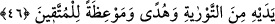

zâlimlerdir.
“Tevrat’ta onlara” yani yahûdilere “şöyle yazdık:”, farz kıldık. “Cana can” yani
başkasını haksız yere öldüren öldürülür. “göze göz” haksız yere göz çıkaranın gözü
çıkarılır. “buruna burun” haksız yere başkasının burnunu kesenin burnu kesilir.
“kulağa kulak” haksız yere başkasının kulağını kesenin kulağı kesilir. “dişe diş” haksız
yere başkasının dişini sökenin dişi sökülür. “ve yaralara karşılıklı kısas vardır.” Yani
denkliği bilinebilen durumlarda kısas vardır.
Kemik kırmak veya karşıdakinin karnını deşip yaralamak ve benzeri eşitliğin
sağlanılması mümkün olmayan yerlerde kısas yapılmaz. Çünkü, bu yaralamaların nereye
kadar ulaştığına vâkıf olmak mümkün değildir. Bu çeşit yaralamalarda diyet veya
hükûmet (miktarı şer’an belli olmayıp, ehl-i vukûf tarafından tâyin edilen diyet) vardır.
Kısasa müstehak olanı “kim bağışlarsa” yani kim kısas yapılacak hasmını bağışlarsa.
Âyette bağışlamanın “tasadduk” olarak ifade edilmesi, buna mübâlağalı olarak teşvik
içindir. “O” yani bağışlama “kendisi için keffâret olur.” Allah Teâlâ bağışlayanın
geçmiş günahlarını affeder. Bağışlayan kişi kâfir ise küfürde devam ettiği için bu onun
günahlarına keffâret olmaz.
Bir hadîs-i şerifte şöyle buyurulmuştur: “Kim vücûdunun herhangi bir yerinden
yaralanır da Allah rızâsı için yapana karşılık vermeyi terkederse bu onun
günahlarına keffaret olur.”[320]
Başka bir hadiste de şöyle buyurulmuştur: “Üç şey vardır ki kim kıyâmet gününde
îmanlı olduğu halde bunlarla gelirse cennetin istediği kapısından girer ve istediği
kadar hûri ile evlenir: Katilini affetmek, her farz namazın ardından on bir defâ İhlas
sûresini okumak ve gizli (belgesiz) bir borcu ödemektir.”[321]
Bazı müfessirler “ ” (kendisi için) daki zamirin yaralayan veya öldüren yerine
” (kendisi için) daki zamirin yaralayan veya öldüren yerine
kullanıldığı görüşündedirler. Buna göre kendisine karşı suç işlenen kimse onu yapanı
bağışlarsa, kısas yapıldığında nasıl keffaret oluyorsa bu bağışlama da suçu işleyenin
günâhına keffâret olur ve bu sebeple âhirette sorguya çekilmez. Bağışlayanın ecri ise
Allah’a aittir
“Kim Allah’ın indirdiği” hükümler ve kanunlar “ile hükmetmezse işte onlar
zalimlerdir.” Zulümde aşırıya giden, Allah Teâlâ’nın koyduğu sınırları aşan ve bir şeyi
kendi yerinden başkasına koyan kimselerdir.
46- O peygamberlerin peşinden kendisinden önce gelen Tevrat’ı tasdik edici
olarak Meryem oğlu Îsâ’yı gönderdik. Ona da içinde hidâyet ve nur bulunan,